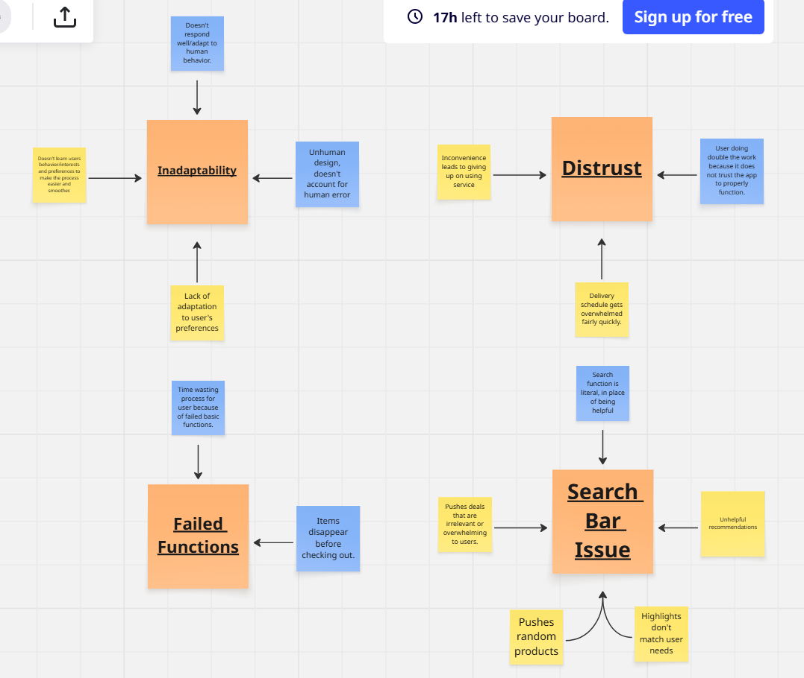
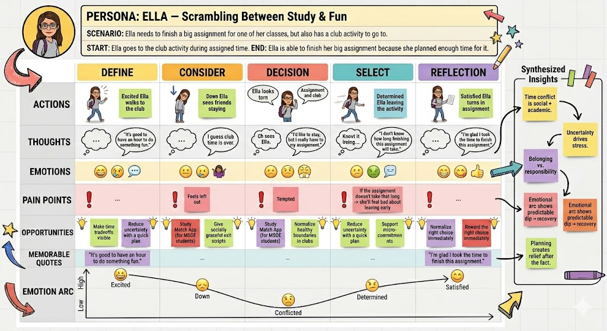
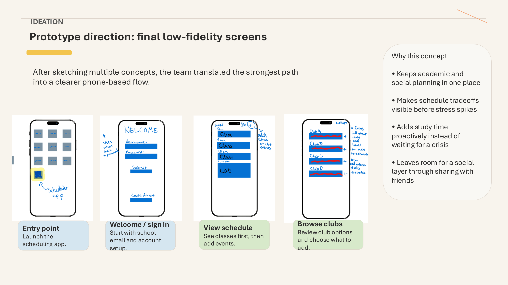

Helping students balance academics, study time, clubs, and campus involvement
Project Overview
Schedulr is a UX case study focused on helping college students manage their
time between academics, study sessions, extracurricular activities, and campus involvement.
This was a collaborative project completed with Cecilia Bilski and Alexander Clarke.
The project was centered around reducing student stress caused by schedule conflicts
and improving time management through structured planning tools.
Problem
Many students struggle to balance coursework, clubs, social events, and study time.
As responsibilities increase, students often feel overwhelmed and uncertain about how
to prioritize their time effectively.
Conflicts between academic and social schedules
Lack of structured planning tools
Difficulty deciding what to prioritize
Stress caused by workload and poor time visibility
Design Goal: Create a scheduling experience that helps students
manage time more effectively without sacrificing academics or campus involvement.
Role & Contributions
I contributed to research, affinity mapping, persona development,
feature planning, and prototype direction throughout the project.
Participated in user research and design discussions
Helped organize affinity diagrams
Contributed to persona development
Connected research findings to design features
Collaborated on prototype planning and workflow design
Process
Research & Affinity Mapping
We analyzed common student scheduling frustrations and organized recurring themes
using affinity diagrams. This helped us identify patterns related to stress,
workload, sleep disruption, and scheduling conflicts.

Affinity diagram identifying patterns related to stress, scheduling,
workload, and student burnout.
Persona Development
We created a persona named Ella to represent students trying to balance
academic work and social involvement. Ella’s journey helped guide the
design toward reducing uncertainty and improving planning flexibility.

Persona and journey map representing student scheduling struggles.
Design Ideas
Based on our research findings, we focused on features that improve visibility,
reduce stress, and support smarter planning decisions.
Calendar integration
Daily schedule view
Automatic study-time insertion
Club discovery and selection
Social schedule sharing
Prototype
The prototype demonstrates onboarding, schedule creation,
club selection, and automated study-time insertion.

Onboarding and schedule setup flow.Club selection and automated study planning.
High-Fidelity Prototype
View the interactive high-fidelity prototype created in Figma.